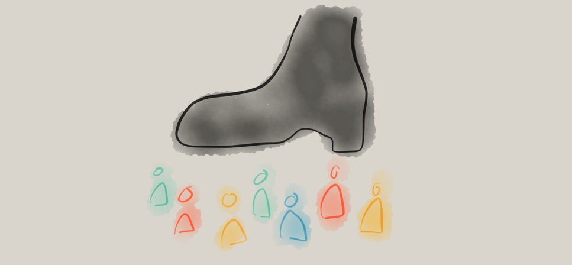

This blog post is based on a keynote I gave recently at the 2019 SSIR Data on Purpose event.
Are you optimistic or pessimistic about data as a tool for good in the world? Over the last few years I’ve seen the shift in answers to this questions. People used to answer “optimistic”, but now most people indicate some mix of emotions. You’ve probably seen the Gartner hype cycle with its suggestion that a technology receives inflated expectations and then is overused to the point of disillusionment. I’d argue that the over-hyping and the disappointment happen at the same time… that time is now for social good organizations that are trying to use data to further their missions.
The response I’ve been crafting focuses on acknowledging the damaging history of the data practices we routinely employ, taking a step back from hype-driven roll-out of data programs, and working to align your data and your mission. The Data Culture Project, my collaboration with Catherine D’Ignazio, works with organizations large and small across the world to help make that happen.
One of the core problems in creating a data culture that aligns with your mission is the history we are fighting against. Data has been a tool for those in power to consolidate that power for centuries. For organizations working in the social good sector, this shouldfeel problematic! If you’re deploying some tool or process, you need to be wary of any pieces that reinforce that history. They can cultivate the opposite of the empowerment, engagement, and ownership goals that are probably at the heart of your mission.

Warning: In this post I’m going to depress you by reviewing some of that history. Don’t worry, I’ll close with some inspirations so it isn’t all doom and gloom. Make sure not to stop reading in the middle, otherwise you might walk away feeling pretty bad about the world!
A Depressing History of Data
I won’t surprise anyone by talking about human history as full of stories of those in power seeking to oppress others. However, I want to highlight a few of those instances that were data-driven. Going back as far as the ancient Egyptians, we can find evidence that they tabulated and tracked populations to determine how much labor they would use to construct their giant monuments to themselves (read more at the UK Office for National Statistics). They created census data to drive massive construction projects in their own likeness.
Fast forward to Britain in the 1700s and you find the horrors of the slave trade via cross-atlantic shipping; all cataloged in stunning details by the shopping industry and the strict regulations they were under. Many of these massive data records are still available today. This economic data numerically catalogues the human suffering of tens of millions at the hands of those in power across the western world.
Next consider another of the darkest times in recent history – the Nazi regime. Their massive atrocities were informed and guided by the tabulations of their census, driven by IBM’s custom manufactured counting machines (read more on Wikipedia). This is a history IBM would like us to forget with their new Watson AI initiatives, but Watson was in fact the one that oversaw all this work as CEO at the time.
A few decades later we find another example in South America, recipient of massive investment and development packages from large multi-national UN-style agencies. All this drove numbers that showed enormous economic growth, while in fact huge populations were suffering. As famed author Eduardo Galeano writes – “the more watched and desperate the people, the more the statistics smiled and laughed”.
As for our current times? You can barely throw a stone without hitting another story of a large centralized technology company using some data in morally questionable ways. Amazon pitching facial recognition to ICE here in the US to keep migrants and asylum seekers out (The Verge), Facebook building massive datasets about non-users to improve their invasive advertising targeting (Reuters), China creating a “social credit score” to control and guide citizen norms (Bloomberg) – the dystopia is here. We are all quantized without any meaningful consent in the massive databases of the big tech corporations.
I trust you’re on board now with the idea that data has a dark history full of examples like these ones that I’ve quickly touched on. Want more? Read Algorithms of Oppression, Weapons of Math Destruction, Automating Inequality, or one of the other recent books about this.
A Disempowering Process
I know, that was pretty depressing. Usually I don’t pull in forced labor, slavery, and the Nazi holocaust into one blog post. Sorry. This thing is, this is the past and present that your data process is living within. We can’t ignore it. You have to work hard to make sure you’re not part of it. To fight this history, first we have to understand the patterns that drove it.
All of these examples showcase a problematic pattern of data use that we can characterize in four ways:
- Opaque processes– the subjects of the data aren’t given any insight into what happens to the data about them
- Extractive collection– the data is pulled from the subjects and their community by those outside of it
- High technological complexity– the mechanisms used to analyze the data, digital and non-digital, have a steep learning curve
- Control of impact– the people the data is about have no say in the impacts of the decisions being made with the data
From my point of view, these are process problems(read more in my paper on with Catherine D’Ignazio). Ok, in some of the more egregious examples above these wouldn’t be described as “problems”, because clearly their goals were to actively oppress and kill the subjects of the data. However, that isn’t the goal of most data endeavors!
The thing is, even many well-meaning, pro-social data efforts use this problematic process. Consider the history of public health and epidemiology to start. In 1663 you have John Graunt carrying out the first recoded experiments in statical data analysis; the ancestor of epidemiology (learn more on Wikipedia). By recoding information about mortality, he theorized that he could design an early warning system for the bubonic plague ravaging Europe. Definitely working for the social good, but in a position of power with no engagement with the effected populations. Extractive dart collection, a complicated statistical process, and no control of impact for the population in mind.
Or how about the famed maps of John Snow, used to discover the origins of cholera in the early 1800s (learn more on Wikipedia). A noble, impactful, and meaningful example of data usage for sure – literally saving lives. The same process criticisms hold – a person of privilege mapping data about “the poor” to discover something without any role of the people that were the data themselves.
When we quickly read these two stories, they sound like amazing historical examples of using data for good! However, when you examine them more deeply, you find the same four criticisms weighed above. Their data methods didn’t match their mission.
Some Inspirations
Knowing this history, how do you make sure you’re not doomed to repeat it? So how do you avoid these pitfalls? You build a data culture within your organization that can do better. You empower staff up and down your org chart to identify problems data can help solve and them support them solving the those problems. You open up your process, you bring people together, you help them make decisions with data. You don’t need data scientists to to this, you need a data culture. This is what our Data Culture Project is all about. Here are some examples to help explain what I mean.
A wonderful historical example is the recently re-discovered works of W.E.B. Du Bois. He pulled census data, among other sources, to create a catalog of “the African American” in 1900. He brought the inventive and novel infographics to the world’s fair in Paris to showcase the work that needed to happen to create true freedom in the US post-slavery (work that is still being done today). He worked with African American students at the university to repurpose this census data to tell their story. These graphics are an example of self-determination – highlighting the problems the subjects of the data themselves have chosen. His statistical techniques were detailed, but he invented new ways to communicate them to a larger, less data-literate audience.
A general theme in my work is using the arts as an invitation to bring people together around data to tell their own story. My work on data murals, a collaboration with my wife Emily Bhargava, is a prime example of this. We bring a group of people together around some data about them, help them find a story they want to tell, and then collaboratively design a mural to tell it. This puts the ownership of the data analysis and the data story in their hands, flipping the standard process on its head. The subjects of the data are empowering to tell the data story, with invitations to analyze the data that build their capacity and meet them where they are in skills and interests.
A more community-focused example comes from the Data 4 Black Lives organization(D4BL). The brutal legacy of slavery in the US permeates our culture, so it should be no surprise that it continues to poison the datasets we use as well. D4BL is working to highlight these problems, bring together organizers, data scientists, and students, and also influence policy to put data in service of the needs of black lives in the US. This is a traditionally marginalized community empowering themselves with the language of those in power (data) and trying to build community in service of their own goals.

For a non-US example, we can look to the work done by the Tanzania Bhora Initiative and Faru Arts and Sports Development Organizatio as part of the Data Zetu Intiaitive in Tanzania. They ran a competition for designers to create khanga cloth patterns based on data (the khanga is a traditional cotton clothoften adorned with sayings or shout-outs). The project built the capacity of designers to speak data, and ended with a fashion show showcasing the winning designs (read more in their blog post). The first place winner (Danford Marco) created a design to reflect that 1 out of every 2 married women have faced some kind of abuse from their husband. A staggering statistic, and a stunning design to bring attention to the problem. This kind of creative approach to building data capacity is an example of a very different process, one that is inclusive, builds capacity, and gives ownership of the data to the people it is about.
Match your Mission and Methods
I’m hoping by now that I’ve convinced you that you need to think harder about the data methods you use in order to avoid re-creating the terrible historical practice associated with data. I’m focused on organizations that work for the social good, but this argument holds true for anyone using data. The inspirational examples I highlight all paint a path forward that lets us match our mission and our methods. Which path will you follow?